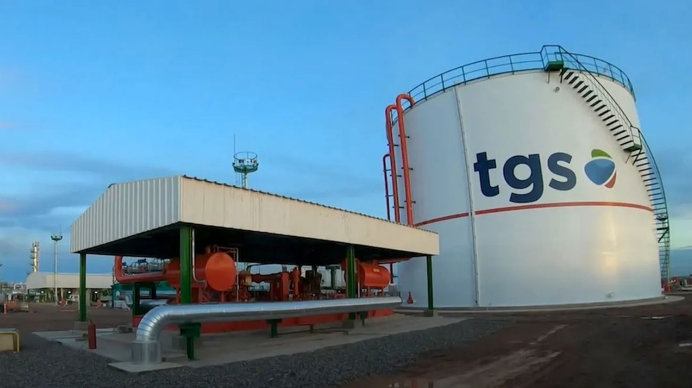

TGS anunció la mayor inversión en líquidos de gas natural de la historia argentina
TGS presentó en Nueva York un proyecto de inversión histórico por US$3.000 millones para el desarrollo de líquidos de gas natural, con obras que irán desde Neuquén hasta Bahía Blanca. El proyecto generará 4.000 empleos directos y 15.000 indirectos, y se espera que produzca exportaciones por US$1.200 millones anuales.

Argentina vuelve a ser noticia en el mundo financiero, y esta vez el anuncio llegó directamente desde Nueva York. Transportadora Gas del Sur (TGS), una de las empresas más importantes del sector energético argentino, presentó ante inversores internacionales un proyecto de inversión que marca un hito en la historia del país: US$3.000 millones destinados al desarrollo de líquidos de gas natural, con un corredor de obras que se extenderá desde Neuquén —corazón de Vaca Muerta— hasta Bahía Blanca, en la provincia de Buenos Aires. Elegir Nueva York como escenario del anuncio no es un detalle menor: es una señal clara de que TGS busca captar capital internacional y de que Argentina está posicionándose como un destino atractivo para inversiones de gran escala.
Para entender el alcance del proyecto, vale explicar qué son los líquidos de gas natural. Cuando se extrae gas del subsuelo, este viene acompañado de ciertos componentes que, al ser procesados y separados, se convierten en productos de alto valor comercial: etano, propano, butano y gasolina natural, entre otros. Estos líquidos tienen múltiples usos, desde la industria petroquímica hasta la exportación directa, y son una fuente importante de divisas para los países productores. Argentina, con la riqueza gasífera de Vaca Muerta, tiene un potencial enorme en este segmento que todavía está lejos de ser explotado al máximo.
El impacto económico y social del proyecto es significativo. TGS estima la creación de 4.000 puestos de trabajo directos y 15.000 empleos indirectos, una cifra que tiene peso real en las provincias involucradas, especialmente en Neuquén y en el área de influencia del polo industrial de Bahía Blanca. A eso se suma la expectativa de generar exportaciones por US$1.200 millones anuales, un flujo de dólares constante que contribuiría directamente a fortalecer las reservas del Banco Central y a sostener el equilibrio en la balanza comercial, dos variables sobre las que el Gobierno viene trabajando con especial atención dentro de su programa económico.
El anuncio de TGS se suma a una seguidilla de noticias de inversión que están redefiniendo el perfil productivo de Argentina. En pocos días, el país vio cómo Southern Energy cerraba el mayor contrato de exportación de GNL de su historia con Europa, Pampa Energía solicitaba el RIGI para un proyecto de US$4.500 millones en Rincón de Aranda, y ahora TGS presenta este megaproyecto ante el mundo financiero. La convergencia de estas inversiones pinta un cuadro donde Vaca Muerta deja de ser solo una promesa y empieza a consolidarse como el motor real de la economía argentina para los próximos años. El desafío del Gobierno será mantener las condiciones de estabilidad y seguridad jurídica que hacen posible que este tipo de proyectos se anuncien, y sobre todo, que se concreten.